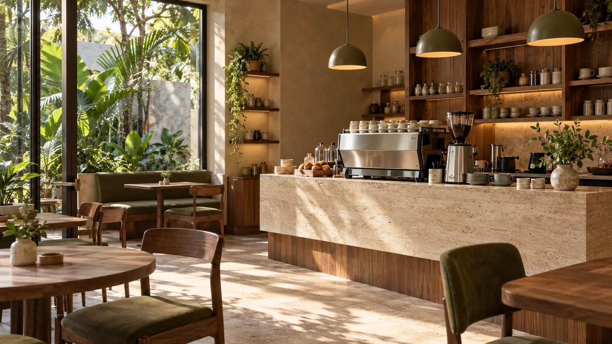
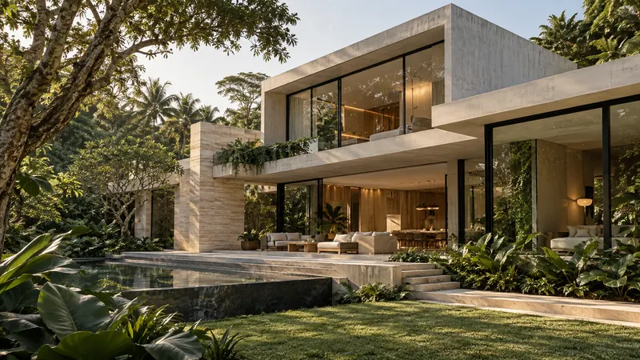
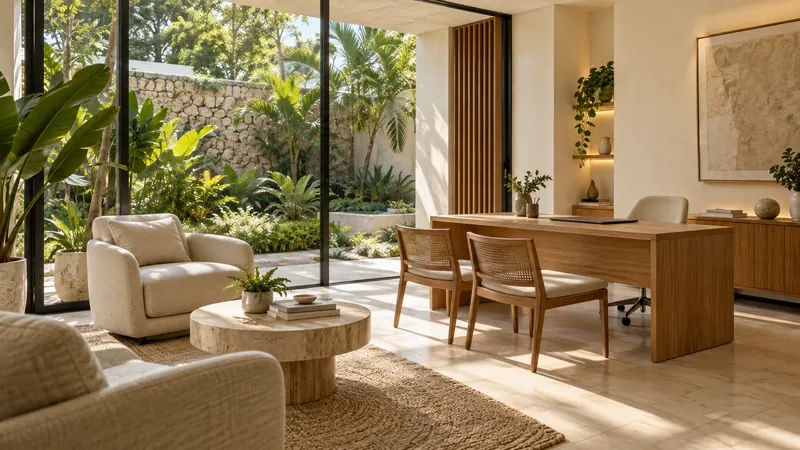
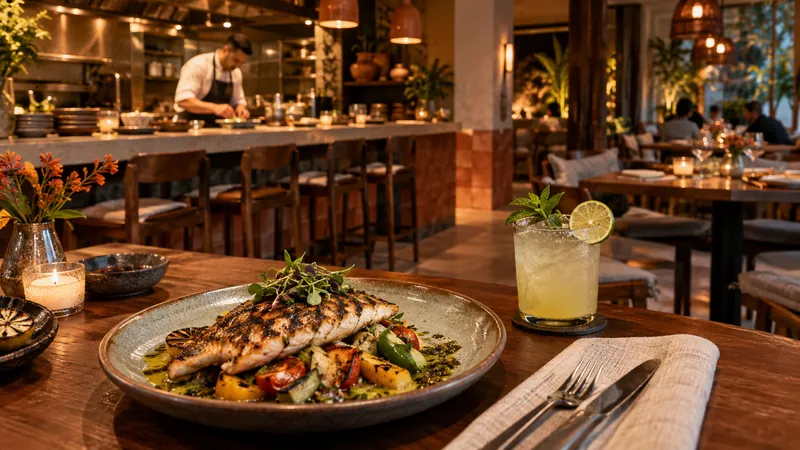
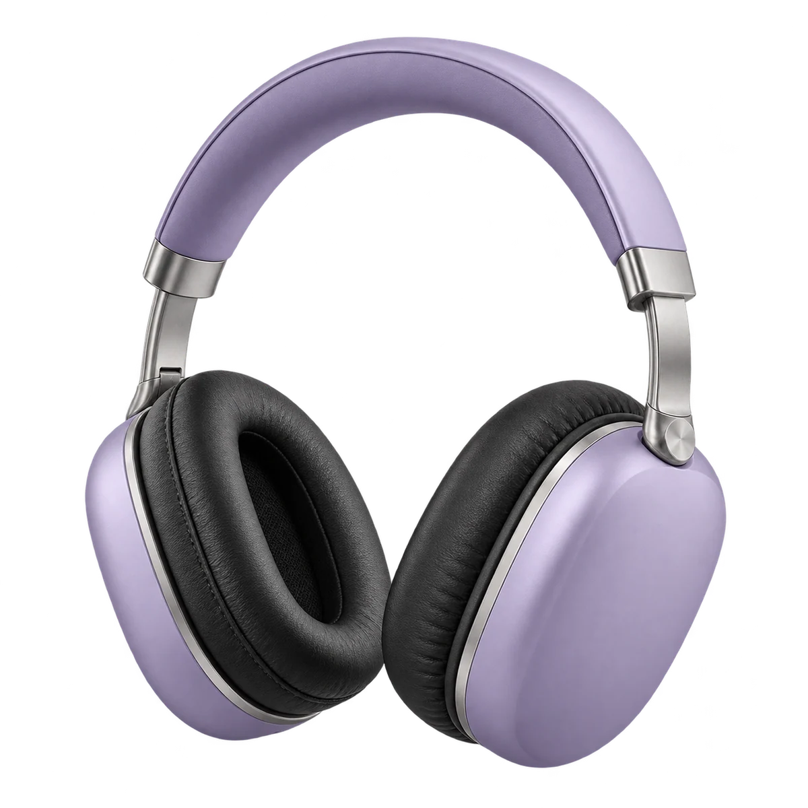
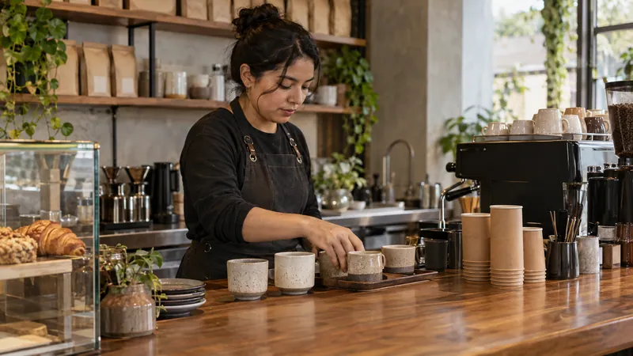
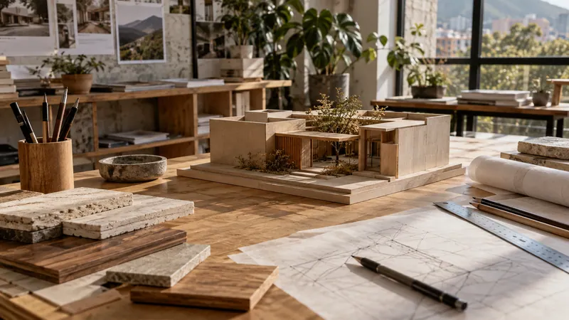
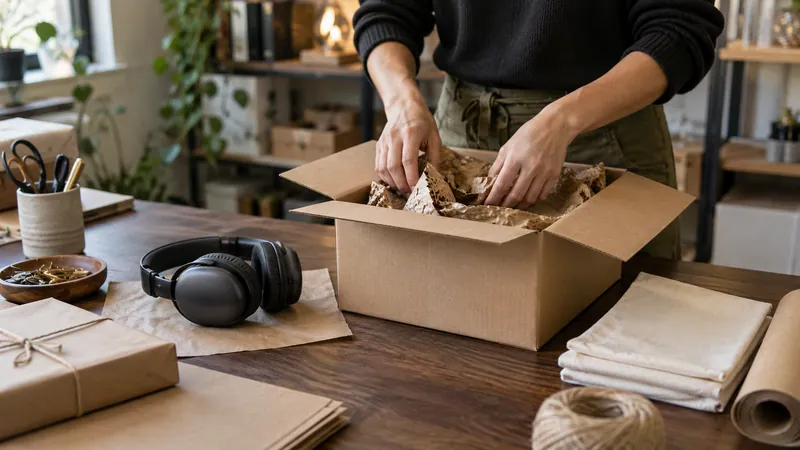
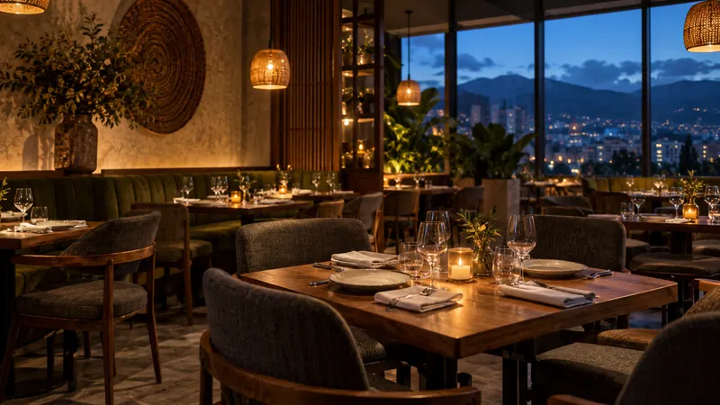
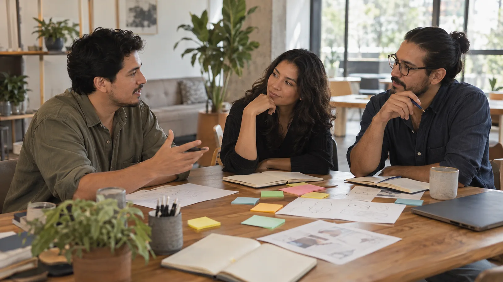

Una página que te represente.
Para tu empresa, tu marca personal o esa idea que llevas tiempo imaginando. Clara, adaptable y hecha para conectar.
Diseñamos páginas, tiendas y automatizaciones para empresas y marcas personales. Tú pones la idea. Nosotros la hacemos funcionar.
Tu marca tiene su propio lenguaje.
Tu web también debería tenerlo.

Un proyecto pequeño o el siguiente paso de tu empresa. Empezamos por entender qué quieres conseguir.
Para tu empresa, tu marca personal o esa idea que llevas tiempo imaginando. Clara, adaptable y hecha para conectar.
Una tienda con catálogo y una experiencia de compra fácil de recorrer. Del primer vistazo al siguiente paso.
Formularios, consultas y seguimiento conectados. Diseñamos automatizaciones alrededor de cómo trabaja tu negocio.
Elige un sector. Explora su página y prueba una automatización pensada para cómo trabaja ese negocio.
12 proyectos: 6 páginas web y 6 automatizaciones.
6 proyectos web
Una carta con fotos propias, café de especialidad y un lugar con personalidad. Del primer vistazo a tu próximo pedido.
Abrir maré. ↗
02 / ARQUITECTURAAURACasas, interiores y materiales que se pueden explorar de cerca. Una presencia editorial con información de cada proyecto.
Abrir AURA ↗Fotos de producto, escenas de uso y tres acabados. Una tienda donde eliges el color, ajustas cantidades y preparas tu bolsa.
Abrir wav. ↗
04 / CLÍNICAalma.Un centro de bienestar con espacios, equipo y servicios propios. Una agenda sencilla para elegir el siguiente paso.
Abrir alma. ↗
05 / RESTAURANTElumbre.Una foto diferente para cada plato, una carta fácil de recorrer y una selección que puedes ajustar antes de pedir.
Abrir lumbre. ↗ 06 / MARCA PERSONALValeria Ríos.
06 / MARCA PERSONALValeria Ríos.Un portfolio con proyectos de cosmética, hotelería y talleres creativos. Cada caso cuenta una idea y cómo toma forma.
Abrir Valeria Ríos. ↗Un producto que puedes mirar, personalizar y llevar a la bolsa. Prueba sus colores aquí y explora la tienda completa.
Explorar la tienda WAV
WAVE ONE / FOTOGRAFÍA DE PRODUCTO CON IASeis procesos que puedes recorrer con tus propios datos de ejemplo. Cada uno muestra un resultado, un registro y un siguiente paso.
6 automatizaciones por sector

maré. / AUTOMATIZACIÓNElige bebidas, cantidades y hora de recogida. La cola de la barra se actualiza y cada pedido tiene su propio ticket.

AURA / AUTOMATIZACIÓNDefine el espacio, los metros y el plazo. La solicitud se convierte en un brief con checklist y una fase de seguimiento.

wav. / AUTOMATIZACIÓNCrea un pedido de Wave One y mira cómo cambia el inventario de cada acabado. El comprobante conserva cantidades y total.
Elige servicio, fecha y horario. La agenda ocupa el cupo y prepara una confirmación; al cancelar, el espacio vuelve a quedar libre.

lumbre. / AUTOMATIZACIÓNIndica cuántas personas vienen y a qué hora. El sistema asigna una mesa disponible y permite liberar la reserva.
Define objetivo y paquete. El brief prepara una propuesta con alcance y permite recorrer sus fases de revisión.
Tu negocio puede necesitar otra combinación.
Empezamos por entender la tuya.
Proyectos y marcas conceptuales, con fotografías creadas con IA. Las automatizaciones usan datos locales de ejemplo; no generan reservas, compras ni mensajes reales.
Recorre un proyecto de principio a fin.
Una idea, una conversación y algo que puedes ver.
Una cafetería imaginada para mostrar cómo trabajamos contigo.
Imaginemos a Lucía, la dueña de Maré: una cafetería con personalidad que quiere llevar su experiencia a internet.

“Tengo una cafetería. Quiero que las personas vean nuestra carta, conozcan el lugar y puedan preguntarnos por una mesa.”
Puedes empezar así: con una idea y lo que necesitas conseguir.
Maré es un proyecto conceptual. Las personas, la conversación y la marca son ilustrativas.

Todo empieza escuchándote.Sabes de tu negocio. Nosotros sabemos cómo darle forma en la web. Juntamos las dos cosas para construir algo que tenga sentido para ti.
Si tu pregunta no está aquí, conversemos.
Escríbenos por WhatsApp ↗No. Podemos empezar con lo que tienes y ayudarte a definir qué necesita tu proyecto para dar el primer paso.
Sí. Diseñamos páginas para empresas, profesionales, emprendimientos y marcas personales. Cada proyecto se adapta a sus objetivos.
Depende de las secciones, el contenido y las funciones. Después de conocer tu idea, acordamos una propuesta con alcance, precio y tiempos antes de empezar.
Desde el inicio definimos qué contenidos quieres administrar y elegimos una solución adecuada. También podemos acordar acompañamiento y mantenimiento.
Cuéntanos lo que tienes en mente y empecemos.